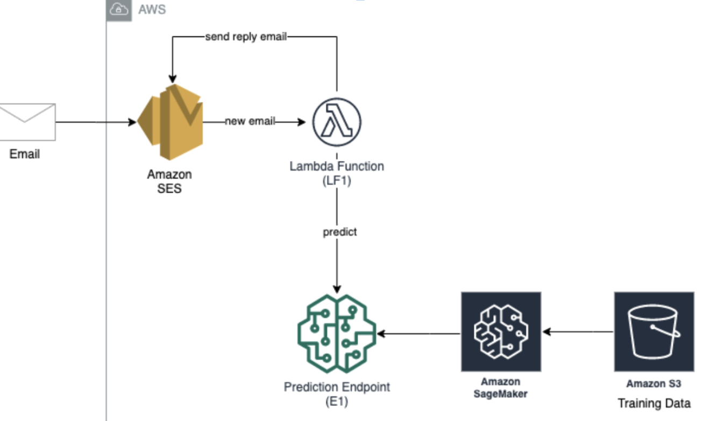

ml ops

A machine learning model has been implemented to predict whether a message is spam or not. The following diagram describes the architecture of the MLOPs Model:
This serverless application has been created using various AWS services like S3, Amazon Sagemaker, Lambda Functions(using Python) and SES. AWS Cloudformation has been used to represent all the infrastructural resources, policies and permissions needed for the configuration of the MLOps Model.
The project was undertaken as a part of the course 'Cloud Computing & Big Data' offered at Columbia University. The project was done in a team of 2 members comprising of Umang Raj and Katie Kim.
The GitHub repository of the project is MLOPS: Spam Detection.